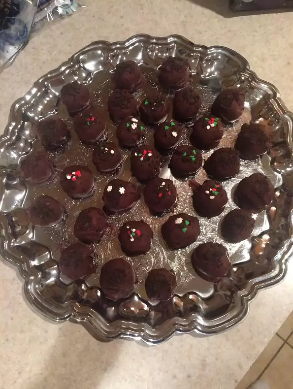

back to home
Oreo Cookie Balls

Excellent maple tart
Sweet with a smooth flavor, they pair well with your favorite vanilla ice cream or whipped cream!
Ingredients:
- 1 (8 ounce) package cream cheese, softened
- 36 OREO Cookies, finely crushed
- 16 ounces semi-sweet baking chocolate, melted
Steps:
- Mix cream cheese and cookie crumbs until well blended.
- Shape into 48 (1-inch) balls. Freeze 10 min. Dip balls in melted chocolate; place in single layer in shallow waxed paper-lined pan.
- Refrigerate 1 hour or until firm.